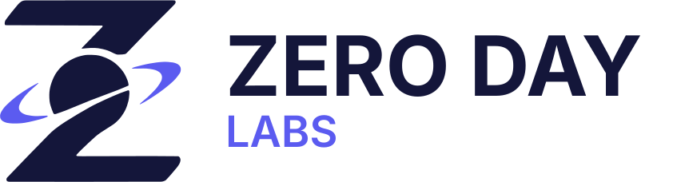
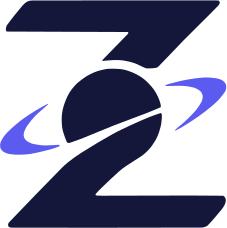
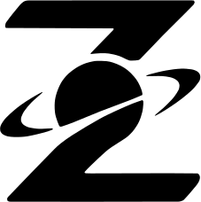
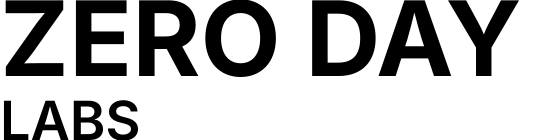

Referencia de logotipo, color y tipografía de Zero Day Labs. Versión 1.0 · septiembre 2026.
Una Z con un planeta y su anillo. El cuerpo del planeta y la Z forman una sola pieza. El anillo, en dos tramos, es el único elemento que lleva el color de acento. La forma se vectorizó del original sin modificar sus curvas ni proporciones.




Arriba: color sobre fondo claro y oscuro. Abajo: negro y blanco, a una tinta.
| Versión | Composición | Uso principal |
|---|---|---|
| Horizontal | Isotipo + "ZERO DAY" / "LABS" en dos líneas a la derecha | Versión principal: web, encabezados, documentos |
| Vertical | Isotipo arriba + "ZERO DAY LABS" en una línea | Formatos cuadrados o verticales, portadas |
| Isotipo | Solo el símbolo | Avatar, favicon, ícono de app, marca de agua |
| Logotipo | Solo texto, en dos líneas | Cuando el isotipo ya aparece cerca o no hay espacio |



Color sobre fondos índigo noche o lavanda niebla. Negro y blanco para impresión a una tinta, grabado, sellos, bordado o fondos fotográficos donde el color no contrasta.
| Color | HEX | RGB | CMYK | HSL |
|---|---|---|---|---|
| Índigo noche | #14163A | 20, 22, 58 | 66, 62, 0, 77 | 237°, 49%, 15% |
| Índigo eléctrico | #5B5BF0 | 91, 91, 240 | 62, 62, 0, 6 | 240°, 83%, 65% |
| Lavanda niebla | #E8E8FA | 232, 232, 250 | 7, 7, 0, 2 | 240°, 64%, 95% |
| Negro | #000000 | 0, 0, 0 | 0, 0, 0, 100 | 0°, 0%, 0% |
| Blanco | #FFFFFF | 255, 255, 255 | 0, 0, 0, 0 | 0°, 0%, 100% |
Los valores CMYK son una conversión matemática desde RGB. Antes de imprimir en volumen, pedí a la imprenta una prueba de color con su perfil. No hay un Pantone asignado todavía; si se necesita, elegirlo comparando con una guía física.
| Elemento | Fondo claro | Fondo oscuro |
|---|---|---|
| Z y planeta | #14163A | #E8E8FA |
| Anillos | #5B5BF0 | #5B5BF0 |
| "ZERO DAY" | #14163A | #E8E8FA |
| "LABS" | #5B5BF0 | #5B5BF0 |
| Familia | Inter, de Rasmus Andersson |
| Licencia | SIL Open Font License 1.1 (gratuita, uso comercial permitido) |
| Descarga | fonts.google.com/specimen/Inter · rsms.me/inter |
| Pesos usados | Bold 700 · SemiBold 600 · Medium 500 · Regular 400 |
| Respaldo (CSS) | Inter, 'Helvetica Neue', Helvetica, Arial, sans-serif |
| Texto | Versión | Peso | Detalle |
|---|---|---|---|
| ZERO DAY | Horizontal, logotipo | Bold 700 | Mayúsculas. Cuerpo 104 u; altura de mayúscula ≈ ⅓ de la altura del isotipo |
| LABS | Horizontal, logotipo | SemiBold 600 | Mayúsculas. Cuerpo 54 u (≈ 52% de ZERO DAY), espaciado abierto hasta igualar el ancho de ZERO DAY |
| ZERO DAY LABS | Vertical | 700 + 500 | Una línea. "ZERO DAY" en Bold, "LABS" en Medium y color de acento, ancho igual a 2,6× el isotipo |
u = unidades del archivo SVG. En el logo horizontal el isotipo mide 227 × 228 u y el texto empieza a 56 u del isotipo. En los SVG el texto está como texto editable: en equipos sin Inter instalada se muestra con la fuente de respaldo. Para imprenta, señalética o envío a terceros, convertir el texto a curvas (Illustrator: Texto › Crear contornos) con Inter instalada.
Carpeta Zero Day Labs - Marca, con svg/ (vector, para web e impresión) y png/ (fondo transparente, 2400 px en el lado mayor). Cada pieza existe en las cuatro variantes:
| Sufijo | Para usar sobre |
|---|---|
| _color-fondo-claro | Blanco, lavanda niebla o fondos claros |
| _color-fondo-oscuro | Índigo noche o fondos oscuros |
| _negro | Fondos claros, a una tinta |
| _blanco | Fondos oscuros o fotográficos, a una tinta |
isotipo_* · logo-horizontal_* · logo-vertical_* · logotipo_*